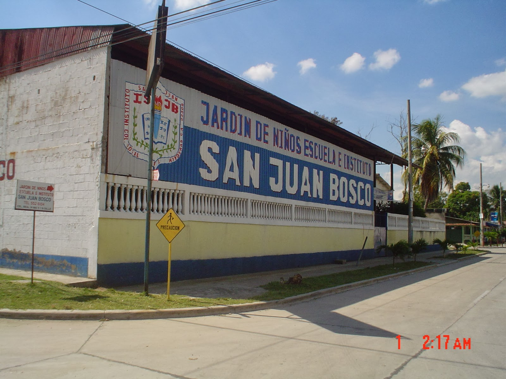

Es importante destacar que esta Institución educativa tiene como fundamento la palabra de Dios, por lo que la institución recibe la fuerza, fortalezas y protección de lo alto, de esta manera la palabra de Dios es una de las fortalezas y que se desarrolla con los jóvenes que vienen a estudiar a este Centro Educativo.
Un dia 09 de febrero se da inicio a un sueño, se abrieron las puerta del Instituto San Juan Bosco, acogiendo a 26 alumnos de primer curso del ciclo común de cultura general y ocho profesores con un solo ideal, brindar a estos jóvenes la oportunidad de obtener una educación técnica, cientifica y humana fundamentada en el desarrollo integral del individuo como futuro ciudadano del servicio del país.
Dos años mas tarde, el 05 de mayo de 1983, se canta por primera vez el himno al Instituto San Juan Bosco con letra y música del profesor Manuel Maria Fernadez. En este entonces el laboraba como profesor de música, en la institución. Desde ese dia en cada lunes cívico se canta el himno al instituto con el respeto y sentimiento que el creador como educador sembró en sus alumno.
La demanda de los educando crece al igual que las que las expectativas de formar a los mismo con una educación secundario completa y es así que en 1990 da inicio a la carrera de educación comercial con muy buena aceptación por parte del alumno y padre de familia, nueve años mas tarde se da comienzo a la carrera de bachillerato en administración de Empresa y en el 2004 bachillerato de ciencia y letras y computación.
La institución crece y con ello la necesidad de desempeñae eficientemente cada una de las funciones que facilite el desempeño eficiente de cada uno de los profesores de acuerdo a su formación profesional y de esas manera conservar y fortalecer con el dia a dia el prestigio en la formación profesional de los jóvenes que ocupan los salones de clase de nuestro centro educativo y que el dia de mañana ocuparan un lugar especial de nuestra sociedad.
